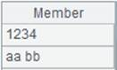

Description:
Group records of a pseudo table by comparing the grouping field in each with its next neighbor.
Syntax:
T.group(xi,¡)
Note:
The function groups pseudo table T, which should be ordered, according to the grouping field x and by comparing each x value with its next neighbor, and returns a new pseudo table. The operation is equivalent to a merge.
Parameters:
|
T |
A pseudo table |
|
xi |
Grouping expression; use comma to separate multiple grouping fields or expressions |
Options:
|
@i |
x is a boolean expression. Begin a new group when a record makes it return true. In this case there should be only one x |
|
@1 |
Get the first record of every group to form a record sequence and return it; here it is number 1, instead of letter l |
|
@t |
Return result as a table sequence on which an index can be directly created; by default, the function sorts the result |
Return value:
A pseudo table object
Example:
|
|
A |
|
|
1 |
=create(file).record(["D:/file/pseudo/empT.ctx"]) |
|
|
2 |
=pseudo(A1) |
Generate a pseudo table object |
|
3 |
=A2.group(GENDER,DEPT) |
Put records where both GENDER and DEPT values are same into the same group and return a new pseudo table |
|
4 |
=A3.import() |
Get data from A3¡¯s pseudo table  |
|
5 |
=A2.group@i(GENDER=="F") |
Create a new group whenever the record meets the condition GENDER=="F" |
|
6 |
=A5.import() |
Get data from A5¡¯s pseudo table
|
|
7 |
=A2.group@1t(GENDER) |
Retrun the first record of each group |